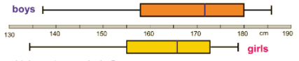
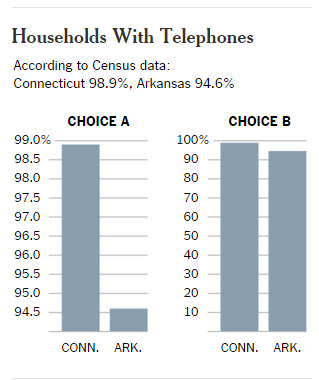
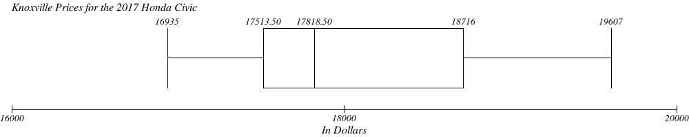
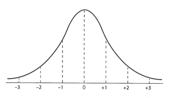
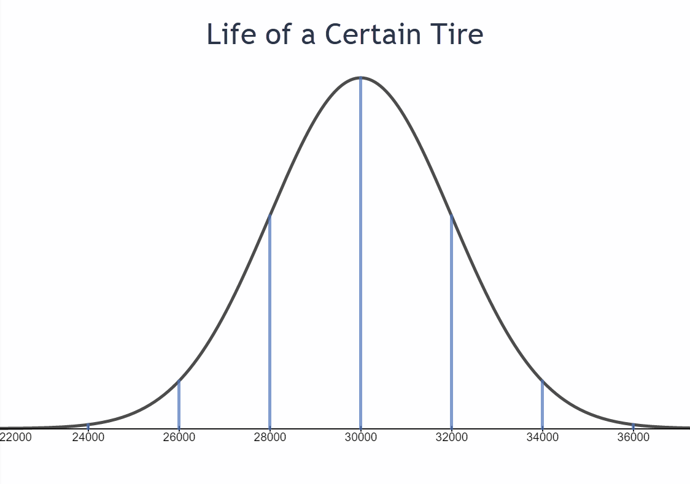

Statistics Unit
Review
- A study of the use of antidepressants selects 50 participants between the ages of 20 and 29, 50 participants between the ages of 30 and 39, and 50 participants between the ages of 40 and 49. Which sampling method was used? Circle answer.
- simple random sampling
- systematic sampling
- convenience sampling
- stratified sampling
d. stratified sampling
- I am studying pre-registration participation at the Hardin Valley campus. I survey all the students in my five classes to see how many have pre-registered for next semester. Which sampling method have I used?
- simple random sampling
- systematic sampling
- convenience sampling
- stratified sampling
c. convenience sampling
- An IRS (Internal Revenue Service) auditor randomly selects 30 taxpayers in each of the filing status categories: single, head of household, married filing jointly, and married filing separately. Which sample type is this?
- simple random sampling
- systematic sampling
- convenience sampling
- stratified sampling
d. stratified sampling
- You conduct a poll by calling every 50th name in the Knox County Bell South white pages. Which sampling method are you using?
- simple random sampling
- systematic sampling
- convenience sampling
- stratified sampling
b. systematic sampling
- Which of the following describes a study in which the researchers do not know which participants are in the control group?
- Single-blind experiment
- Observational study
- Double-blind study
- Case-control study
c. Double-blind study
- Which of the following better describes bias as it relates to statistics:
- When bias occurs it may prevent the sample from being representative of the population.
- Bias means the result of a survey was not what the surveyor expected.
a. When bias occurs it may prevent the sample from being representative of the population.
- Which of the following describes the bias that occurs when a Facebook online survey is used to collect data?
- Participation bias
- Availability error
- Selection bias
- No bias
a. Participation bias
- A random sample of high school students found that 17% chose History as their favorite subject, with a margin of error of 6% points. Which of the following can be stated with 95% confidence?
- The actual percentage of high school students whose favorite class is History is between 17% and 23%
- The actual percentage of high school students whose favorite class is History is between 11% and 17%
- The actual percentage of high school students whose favorite class is History is between 11% and 23%
- The actual percentage of high school students whose favorite class is History is 17%
c. The actual percentage of high school students whose favorite class is History is between 11% and 23%.
- Use the bar graphs to answer the questions.
![The first bar graph represents the Total CO2 emissions by country. The emissions are recorded in millions of metric tons. China's bar is at 6500. the U.S. is at 5900, Russia is at 1800, Japan is at 1600, India is at 1400, Germany is at 1000, Canada is at 500 and the United Kingdom is at 500. The second bar graph represents the per person CP2 emisions and is measured in metric tons. The U.S. is at 19, Canada is at 17, Russia is at 12, Germany is at 10, Japan is at 9, the United Kingdom is at 9, China is at 5 and India is at 1.](images/u2reviewp9.png)
- What is the total CO2 emissions for Canada?
- What is the per-person CO2 emissions for Germany?
- Would you say China has a worse problem with CO2 emissions than the United States?
About 500 million metric tons
about 10 metric tons
China has greater total CO2emissions even though they have less per person emissions due to the larger population. The area of China and the U.S. are similar (China is slightly larger), so you might conclude that China does have a worse problem.
- The following boxplot shows the heights of boys and girls in a private school with grades 5-12.

- What is the median boys’ height?
- Do boys or girls have the largest range in heights?
- True or False: 25% of boys are taller than 180 cm.
- True or False: The majority of girls are taller than 165 cm.
172 cm
boys
true
true
- Use the time series graph to answer the questions.
![The time series graph represents the U.S. homicide rate. The horizontal axis is the years from 1960 to 2012 and the vertical axis is the homicide rate per 100,000 people and goes from 0 to 12.. There are several points plotted and they are connected to form the graph. The points that are plotted are (1960,5), (1961,4.5), (1962,4.3), (1963,4.3), (1964,4.9), (1965,5),(1966,5.8), (1967,6.1), (1968,6.4), (1969,6.6), (1970,8), (1971,8.2), (1972,9), (1973,9.5), (1974,9.9), (1975,9.8), (1976,8.4), (1977,8.4), (1978,8.5), (1979,9.9.), (1980,10.1), (1981,9.9), (1982,8.5), (1983,8), (1984,7.8), (1985,7.8), (1986,8.2), (1987,8), (1988,8.1), (1989,8.2), (1990,9), (1991,9.2), (1992,8.9), (1993,9), (1994,8.8), (1995,7.9), (1996,7.1), (1997,6.3), (1998,6), (1999,5.2), (2000,5.1,), (2001,5.2), (2002,5.2), (2003,5.3), (2004,5.1), (2005,5.2), (2006,5.3), (2007,5.2), (2008,5.1), (2009,4.9), (2010,4.8), (2011,4.7), (2012,4.7).](images/u2reviewp11.png)
- For what years are the homicide rates given? Circle your answer.
- 0, 4, 6, 8 10 12
- No specific years are given. This is just showing the trends.
- The even years from 1960 – 2012
- All of the years from 1960 – 2012
- 4, 6, 8, 10, 12
iv. All of the years from 1960 - 2012.
- In which year was the number of homicides the greatest?
- How many homicides happened in 1964?
- Why might the homicide rates have decreased since 1995?
- What is the percent decrease in U.S. homicide rates from 1992 to 2012?
1980
5 per 100,000 people
The decrease in homicides rates could possibly be due to the increase in law enforcement agencies or possibly stricter laws and greater penalties.
Homicides in the U.S. decreased by 44.4% from the year 1992 to 2012.
- For what years are the homicide rates given? Circle your answer.
![The bar graph is a double bar graph representing the results of a science test for both boys and girls in different countries. The horizontal axis is the countries being represented and the vertical axis repsents the total of the scores for the boys in each country and the total of the scores for the girls in each country. The U.S. boys scored 508 and the girls scored 492. The Finland boys scored 541 and the girls scored 560. The Great Britain boys scored 518 and the girls scored 508. The Denmark boys scored 501 and the girls scored 490. The Japanese boys scored 530 and the girls scored 541. The South Korean boys scored 535 and the girls scored 537.](images/u2reviewp12.png)
- Did the Finland girls score more than twice what the U.S. girls scored?
- Compare the Japan boys to the South Korea boys. Who scored higher?
- What is the difference in the boys’ scores for Great Britain and Denmark?
no
South Korea boys
517 - 502 = 15 points

The second graph is the better graph because it correctly represents the data. In the first graph, it appears that Connecticutt has far more households with phones than Arkansas.
ACCBDFCCBBADFBCCBCCD
| Rating | Frequency | Relative Frequency |
|---|---|---|
| A | 2 |
10% |
| B | 5 |
25% |
| C | 8 |
40% |
| D | 3 |
15% |
| F | 2 |
10% |
| Total | 20 |
100% |
Yes
No
No
Yes
Yes
No
No
Yes
51, 63, 36, 43, 34, 62, 73, 39, 53, 79
Mean:
53.3
Median:
52
Mode:
No mode
Midrange:
56.5
| 16,935 | 17,291 | 17,469 |
|---|---|---|
| 17,647 | 17,558 | 17,648 |
| 18,538 | 18,894 | 19,251 |
| 19,607 | 17,989 | 17,990 |
Low (min) =
$16,935
Lower quartile Q1 =
$17,513.50
Median =
$17,818.50
Upper quartile Q3 =
$18,716
High (Max) =
$19,607
Standard deviation =
$828.11
Draw a box plot for the data set.

To investigate, ComputerWare asked 500 of its iMac purchasers what computer they owned or had owned. Of the 500 purchasers, 83 were new computer owners who had never owned a computer before, 60 had previously owned a Windows-based computer, and 357 had owned a Macintosh.
- Calculate the percentage of iMac purchasers who were new computer owners.
- What is the population of the study?
- What is the sample population?
- What are the sample statistics in the study?
- What type of study was this?
- If the margin of error was 3.5%, what is the confidence interval for the percentage of iMac purchasers who were new computer owners?
- After one year and the sale of 2,000,000 iMacs, Apple reported that one third of the new buyers of iMacs are first-time computer buyers. Is this within the confidence interval?
- Is this sampling error or might there be other factors at work here?
16.6%
iMac users
500 iMac purchasers in 1998
Out of 500, 83 were new computer owners (16.6%), 60 were previous Windows computer owners (12%), and 357 were previous Mac computer owners (71.4%).
observational
13.1% - 20.1%
No
other factors such as rise of personal computer ownership
- Label the normal distribution for the given information.
- 68% of all these tires will have a life between ______km and ______km.
- 95% of all these tires will have a life between ______km and ______km.
- What percent of the tires will have a life that exceeds 26,000 km?
- If a company purchased 2000 of these tires, how many tires would you expect to last more than 28,000 km?


between 28,000 km and 32,000 km
between 26,000 km and 34,000 km
97.5%
1,680 tires
- About what percent of people who are not sick have a body temperature between 97.58 degrees and 99.44 degrees?
- What is the range of body temperatures for 99.7% of people who are not sick?
- In a population of 1 million people, how many people will have a normal body temperature between 97.58 – 98.82 degrees?
81.5%
96.34 - 100.06 degrees Fahrenheit
680,000 people